Proxy traffic through a NAT gateway
This guide illustrates how to configure Databricks to proxy traffic between EC2 instances and another IP address through a NAT gateway. For example, you can point your BI software to a static IP address, which proxies all traffic to a Redshift cluster through a NAT gateway. From the Redshift cluster’s perspective, all instances have a stable public IP address, regardless of the Databricks cluster’s configuration.
Note
To proxy Redshift traffic, the Redshift cluster must be launched with an IPv4 elastic IP. An elastic IP is stable and publicly accessible.
This article walks through allocating a new public subnet in your Databricks VPC, adding a NAT gateway inside the subnet, and updating the default route table to make sure specific traffic goes through the NAT gateway.
Create a subnet in the Databricks VPC
Contact Databricks to retrieve the ID of your Databricks VPC.
Log in to your AWS VPC console and select Subnet from the left panel.
Enter the Databricks VPC ID in the search box to see all subnets included in the Databricks VPC.
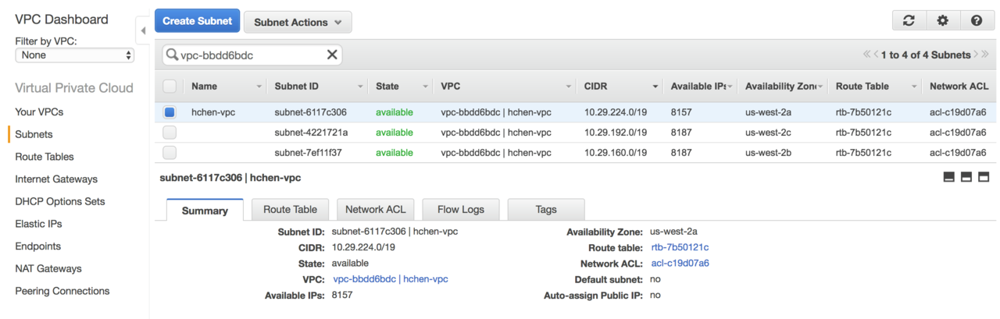By default, Databricks creates one subnet per availability zone (AZ). You must choose an unused CIDR block from the same B-class range, such as
a.b.0.0. In the example, three CIDR blocks are used:10.29.224.0/19,10.29.192.0/19,10.29.160.0/19. All IPs in the address range10.29.0.0~10.29.159.255are free. You can choose a new C-class subnet within that range, such as10.29.100.0/24.Click Create Subnet and enter the following information:
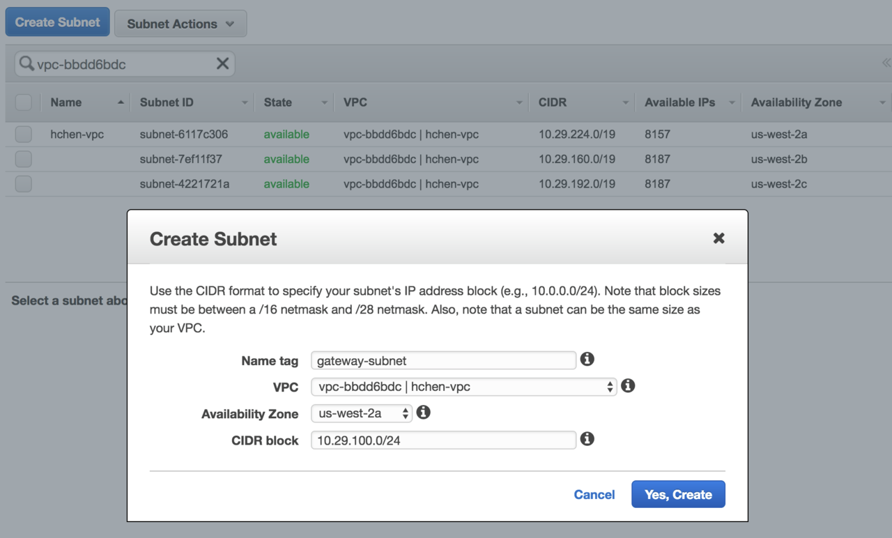Name tag: the subnet’s name. Databricks recommends using
gatewayas part of the name.VPC: the Databricks VPC ID.
Availability Zone: at least one availability zone, depending on your availability needs.
CIDR block: an unused CIDR block containing at least one IP address.
Note
Databricks allocates CIDR blocks starting from the top of the B-class range. When you choose the CIDR block for the gateway subnet, Databricks recommends that you use a lower range to avoid future conflict if AWS adds more availability zones to the region.
The public subnet needs only a single IP for the NAT gateway.
Click Yes, Create.
Create a NAT gateway in the subnet
Select NAT gateways from the AWS VPC console’s left panel, and click Create NAT gateway.
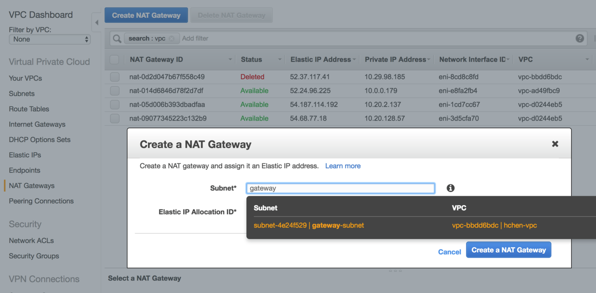In Subnet, select the subnet you just created.
Choose any available IP from Elastic IP Allocation ID. If there are no available elastic IPs, first create a new elastic IP.
Click Create a NAT gateway.
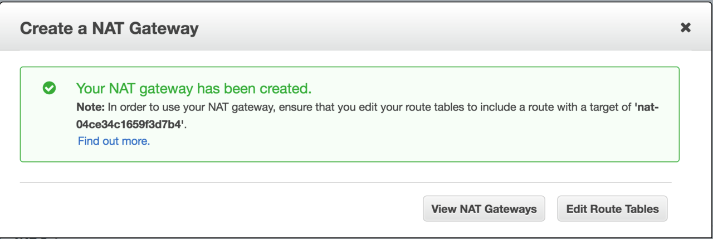On the success page, click Edit Route Tables.
Associate a route table with the gateway subnet
Click Create route table.
In Name tag, enter a name for the route table.
In VPC, select the Databricks VPC ID.
Click Yes, Create.
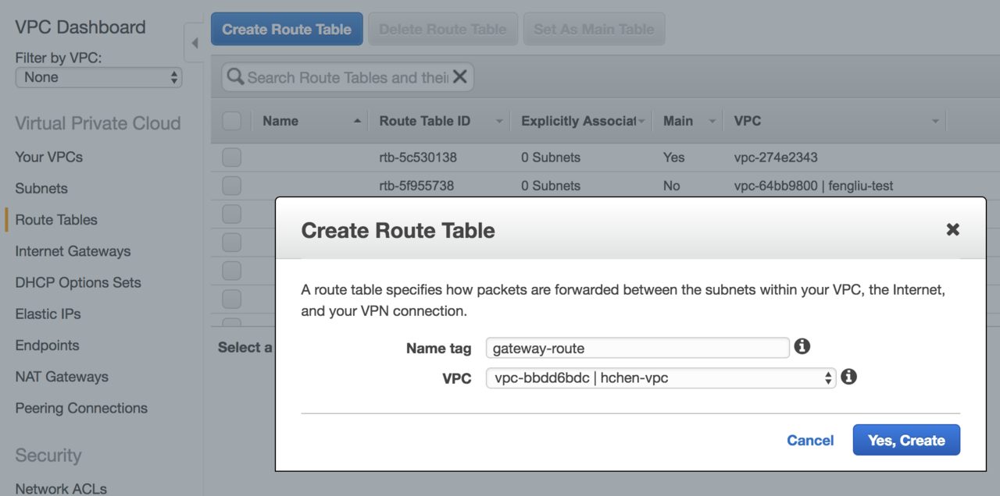Select the newly-created route table from the list.
In the Routes tab, click Edit, then click Add another route.
Enter
0.0.0.0/0in Destination.In Target, choose the Databricks VPC’s internet gateway, which starts with
igw=.Click Save.
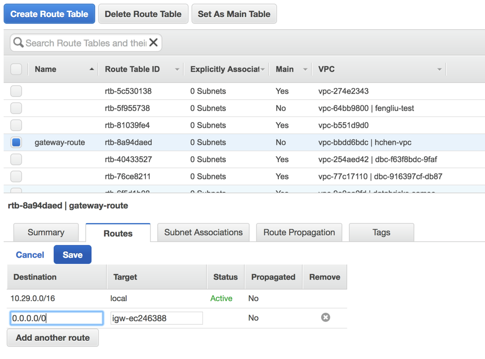Click Edit in the Subnet Associations tab.
Select the NAT gateway’s subnet.
Click Save. The subnet is now a public subnet, accessible on the internet.
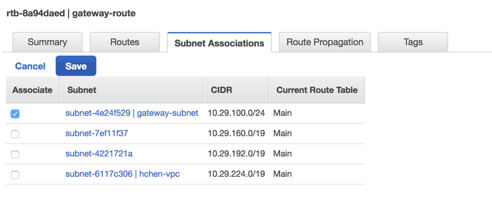
Configure routing to an external system
Follow this procedure to forward all traffic between nodes in the VPC and an external system, such as Redshift, through the NAT gateway.
In the left panel of the AWS VPC console, select Route Tables.
Enter the Databricks VPC ID in the search box. The list shows all route tables used by Databricks VPC.
One of the routes is the gateway route table you just created.
The other, labeled Main, is the default route table for all other subnets in the VPC.
Select the Main route table.
In the Routes tab, click Edit.
In Destination, find the elastic IP of the external system. In the image below, the elastic IP is
1.2.3.4.In Target, select the NAT gateway you created earlier. It starts with
nat-.Click Save.
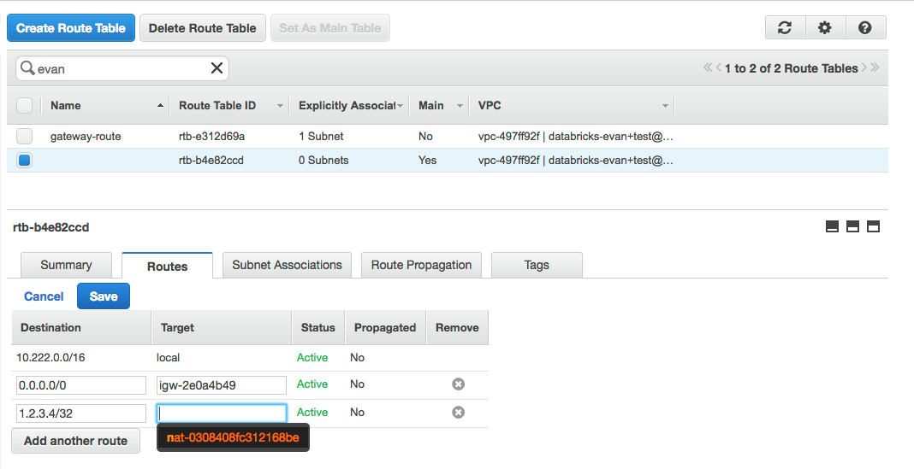
All traffic between all VPC instances and the elastic IP goes through the NAT gateway. From the point of view of the external system, all nodes have the elastic IP’s address.ame IP address as the NAT gateway’s elastic IP. Internal traffic continues using the VPC’s original routing rules.
Add an S3 endpoint to the VPC
External traffic that goes through the NAT gateway is subject to additional charges (see Amazon VPC pricing). To reduce both costs and latency, you can store Databricks assets in S3 buckets. Traffic between an elastic IP and a S3 bucket is free.
Note
VPC endpoints do not support cross-region access. When you access an S3 bucket in a different region, traffic is routed through the NAT gateway.
In the left panel of the AWS VPC console, select Endpoints.
Click Create Endpoint.
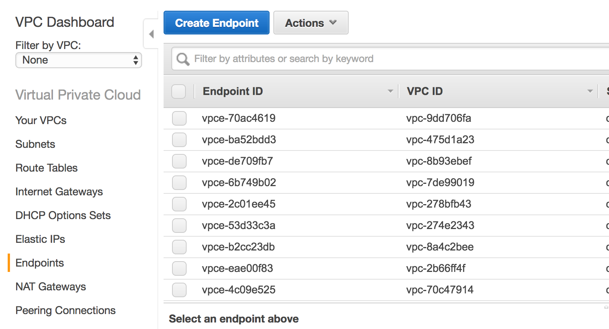In VPC, select the Databricks VPC ID.
In Service, select the only available S3 service.
Click Next Step.
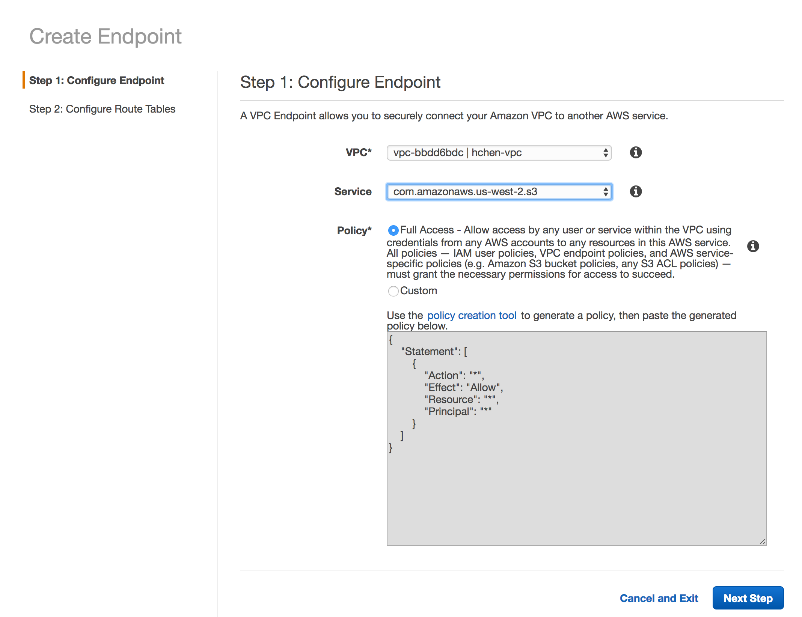Select the Main route table. This associates the S3 endpoint with all private subnets.
Click Create Endpoint.
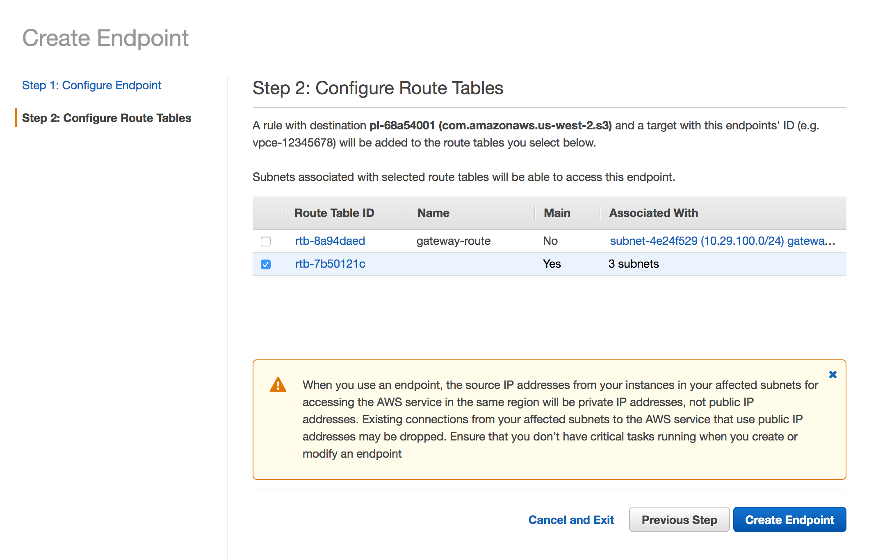
Verify subnet settings
On the Subnets page, go to the Route Table tab.
Enter the Databricks VPC ID into the search box.
Verify the following:
The gateway subnet has the
0.0.0.0/0route set to the VPC’s internet gateway (igw-xxxxxx).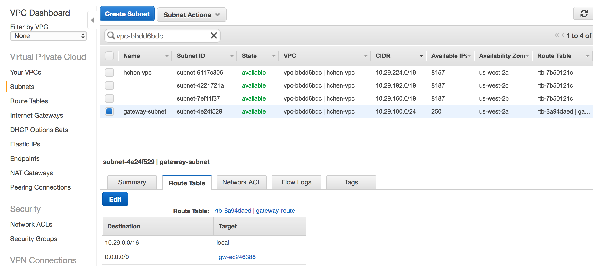All other subnets have the
0.0.0.0/0route set to the NAT gateway (nat-xxxxxx).If the S3 endpoint is configured correctly, the list includes a route with the target set to
vpce-xxxx <target>.
Important
The VPC peering connection to the Databricks control plane VPC (pcx-xxxxx) should remain untouched.
Create a cluster
To test the new configuration, create a new cluster. It automatically uses the new NAT gateway. After the new cluster becomes ready, verify that it works as expected. Contact Databricks if the new cluster fails to start or if you encounter other issues.
Disable the public IP address on the cluster
After you verify that the NAT gateway proxy works as intended, you can request removal of public-facing IP addresses on newly-created clusters.
Important
You can’t disable the public IP address on existing AWS instances.
Contact Databricks support and inform them that you would like to disable public IP addresses.
After Databricks confirms that the configuration change is complete, terminate all clusters in Databricks.
Wait one hour for AWS resources to be cleaned up, or manually terminate the existing instances in the AWS console. If you skip this step, Databricks might reuse existing instances that still have the previously assigned public IP addresses for any new clusters.
Log in to your Databricks deployment and create a new cluster. Wait for the cluster to become ready.
To verify that the cluster has no public IP address, go to the AWS EC2 dashboard and check the configuration of the worker instances:
If the cluster has public IP addresses, or if the cluster does not become ready, contact Databricks.